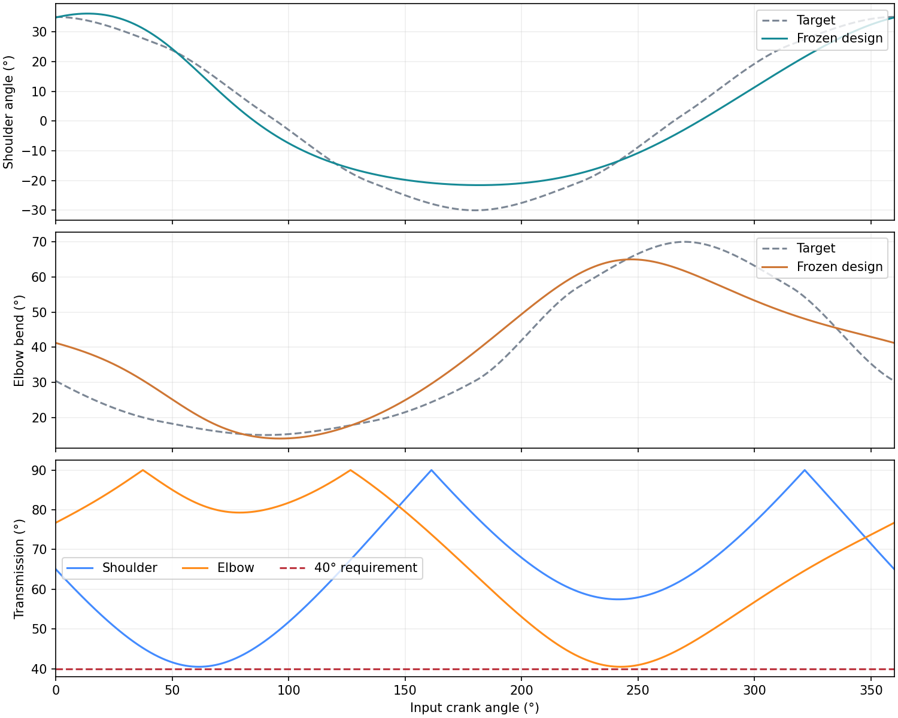
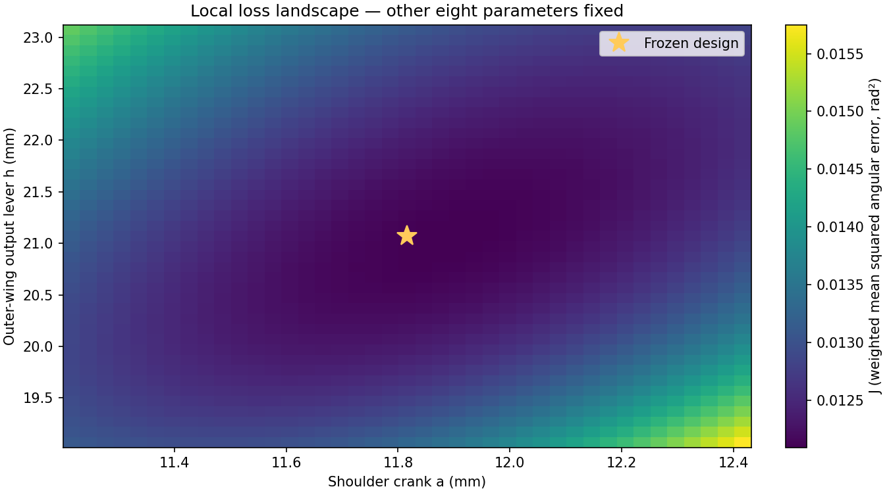

Same frozen six-bar dimensions. Dashed curves are targets; solid curves are actual motion.

Two variables changed virtually; other eight fixed. Gold star: frozen design. White boundary: sampled numerical feasibility, when visible. This is not re-optimization or a collision-checked design family.

Numbers and code locations · Numerical results JSON · Dense motion CSV